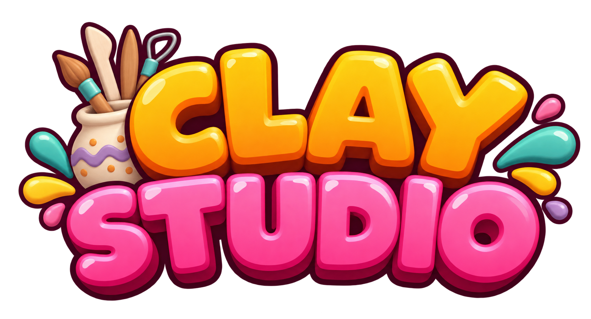
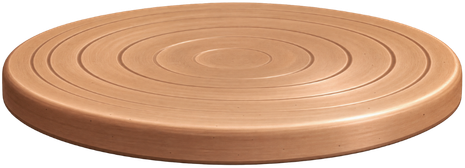
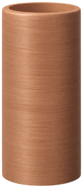

¡Es momento de experimentar con arcilla!
Presiona y arrastra sobre distintas partes de la pieza para transformarla poco a poco.
Tómate tu tiempo y experimenta.
Arrastra hacia afuera para ensanchar.
Arrastra hacia adentro para estrechar.
También puedes ajustar un poco la altura.
DA FORMA A TU PIEZA

